Maxime Bédard
Pour commencer, j'ai fait une boucle qui va piger des blocs carrés au hasard dans l'image source et qui les place côte à côte. Le résultat est très boff, mais c'est un point de départ pour ajouter le chevauchement dans la partie 2.
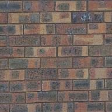
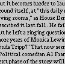
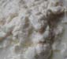
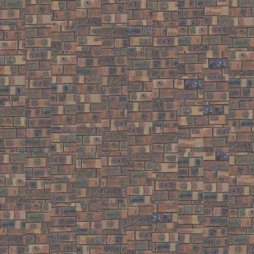
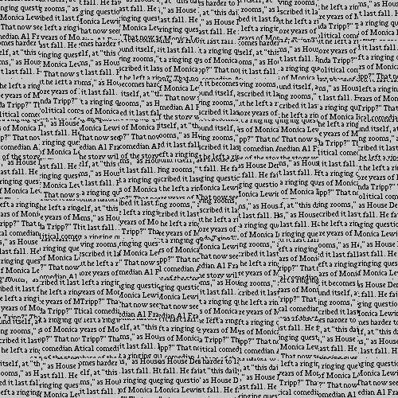
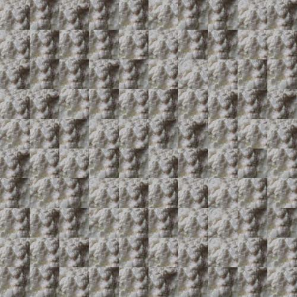
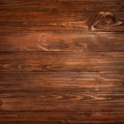
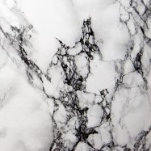
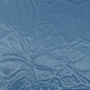
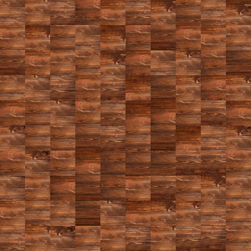
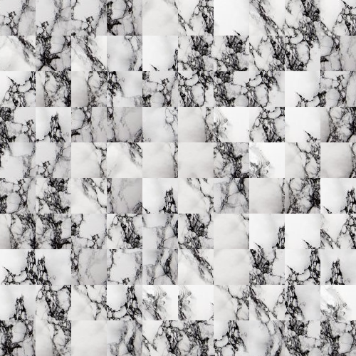
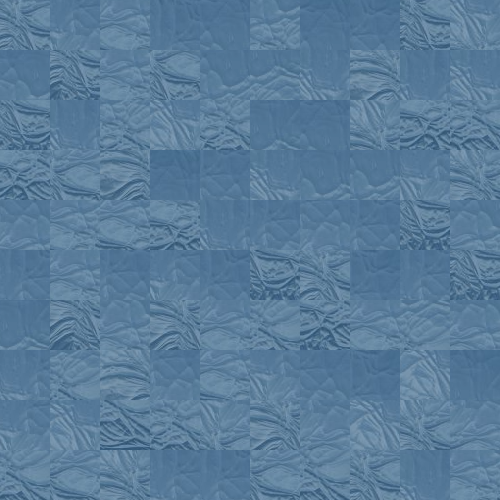
Les transitions entre les blocs sont très abruptes et on voit une genre de grille. La texture globale ne fait pas de sens. Pas grand chose à dire de plus.
Pour cette étape, chaque nouveau bloc chevauche les blocs précédemment placés à gauche et/ou en haut. L'algorithme calcule la SDC dans la zone de chevauchement pour évaluer le fit. Un bloc est choisi aléatoirement dans ceux dont l'erreur est inférieure à (1 + tolérance)*erreur_minimale. Le overlap contrôle à quel point les carrés se chevauchent.
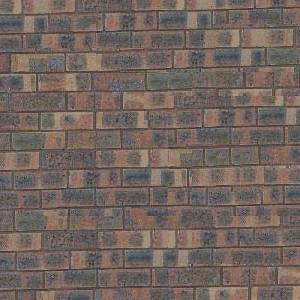
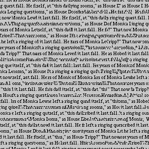
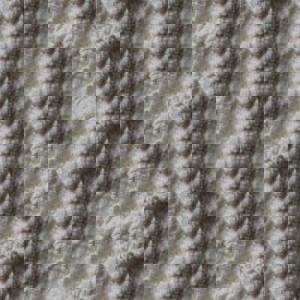
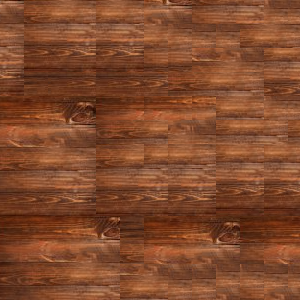
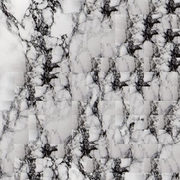
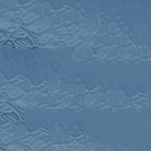
C'est une grosse amélioration par rapport à la méthode aléatoire. Les textures s'alignent vraiment mieux, mais si on regarde de proche, on voit encore des lignes droites là où les blocs écrase les anciens, surtout sur les textures plus définies comme le marbre ou le 'white' fourni. Je suis assez surpris que le texte marche aussi bien avec cet algorithme, malgré que la langue est devenue inexistante. Les paramètres affichés plus haut sont ceux que je garde et qui fonctionne le mieux pour l'ensemble des textures.
Pour essayer de régler le problème des coupures visibles, j'ai implémenté un algorithme qui calcule le chemin de moindre coût dans la zone de chevauchement, ce qui permet de fusionner les blocs en suivant une ligne autre q'une ligne droite. Cela devrait donner un meilleur résultat que le simple chevauchement. La façon de faire est à peu près écrit dans l'énoncé.
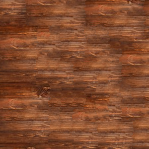
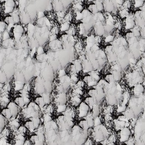
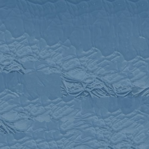
Premièrement, je remarque que le temps de calcul est un peu long. Deuxièmement, j'ai garder les mêmes paramètres que précédemment étant donné qu'ils donnent le meilleur résultat globale. J'ai remarquer cependant que la résolution des textures jouent beaucoup pour le chevauchement et le patchsize (évidemment, je n'avais juste pas remarquer avant). Je vais donc changer les valeurs des paramètres par photo pour ma section personnelle, vu que mes photos vont avoir le même problème. Pour ce qui est des résultats, je suis surpris que l'algo donne des pires résultats que le chevauchement simple. Je crois qu'il s'agit d'une erreur dans mon code, ou peut-être que je n'ai pas trouver le sweet spot (malgré beaucoup d'essaie-erreur). Les textures plus unies donnent quand même un résultat acceptable malgré tout (brique et bois).
Pour la dernière étape, j'ai modifié ma fonction de coupe pour qu'elle ne gère pas juste le chevauchement, mais qu'elle essaie aussi de matcher l'intensité des pixels d'une image cible. J'utilise le paramètre alpha pour balancer entre prioriser la texture ou la forme de l'image cible selon l'équation Coût = alpha*SDC_{chevauchement} + (1-alpha)*SDC_{cible} (écrite en latex). Je reprends une grosse partie du code de quilt_cut.
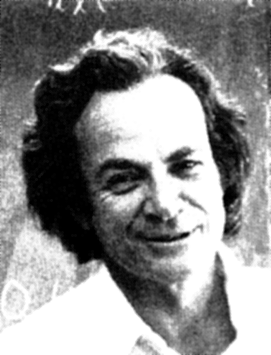
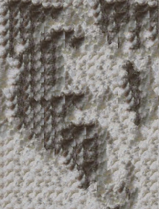
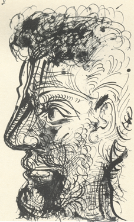
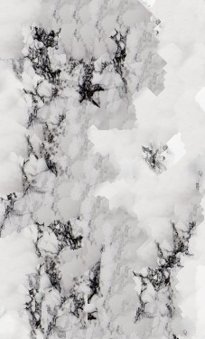
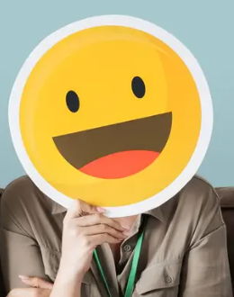
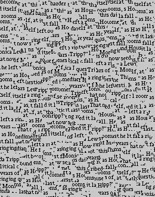
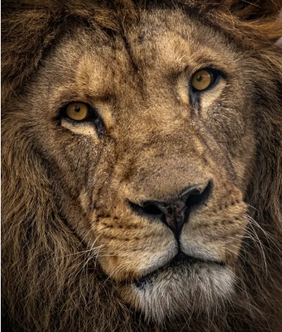
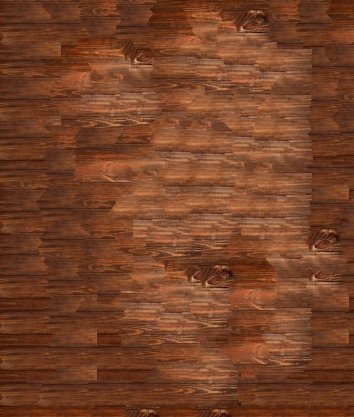
J'ai remarqué que le transfert fonctionne bien si les contrastes de l'image cible sont forts. Un alpha trop près de 1 ignore le visage, mais un alpha trop bas ignore la texture et refait l'effet non voulu de grille d'avant. J'ai aussi remarqué que le patchsize ne doit pas être trop grand et le overlap trop petit. Un fois que j'ai trouvé un bon sweet spot, j'obtiens de très bons résultats. Le transfert 2 et 4 sont impécable et j'adore à quel point le marbre garde ces marques noirs naturelles même en reproduisant le sketch. Le lion est peu visible et je trouve ça parfait car il 'overwhelm' pas la texture du bois. J'ai encore essayé de faire marcher la texture du text mais j'ai décider de l'inclure comme échec car je n'étais pas capable de faire aligner les mots en même temps d'avoir la forme du smile.
Sans changer le code de ma section précédente, je teste mon algorithme sur mes photos.
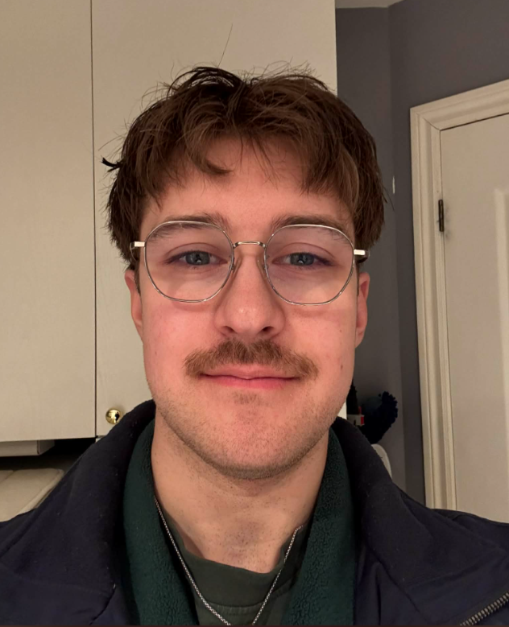
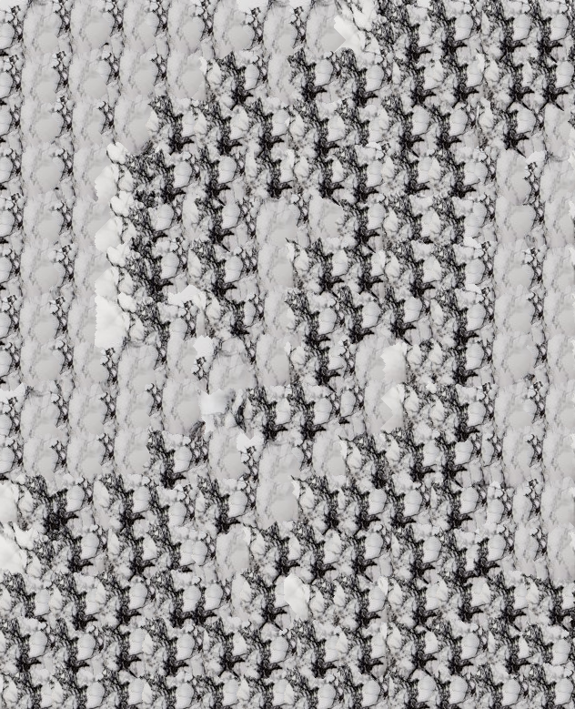
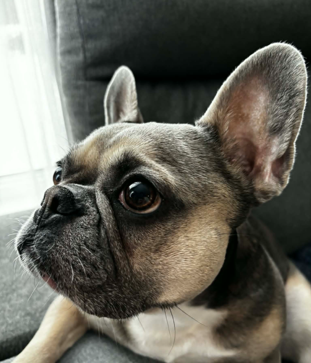
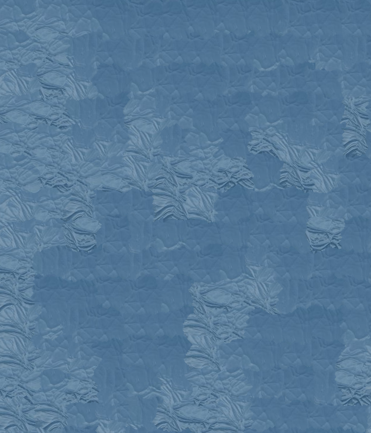
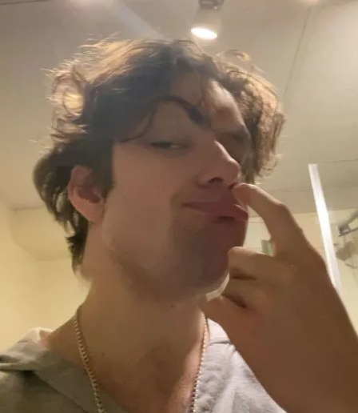
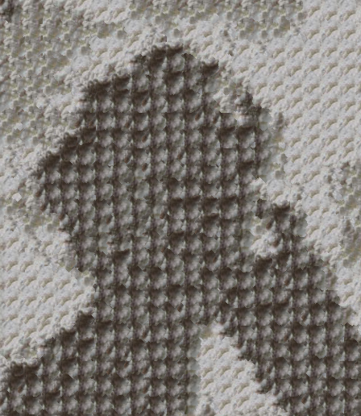
Pour mes photos, je voulais jouer avec le alpha pour tester les limites. J'essayer un mini valeur avec une texture de vitre qui ne fonctionnait pas avant. Avec la photo de mon chien, je suis quand même arrivé à un résultat subtil en forçant la texture sur le visage avec un très petit alpha. Pour mes deux autres photos, les résultats sont acceptables et la définition des personnes est visible, quoiqu'un peu forcé sur mon ami Oli.